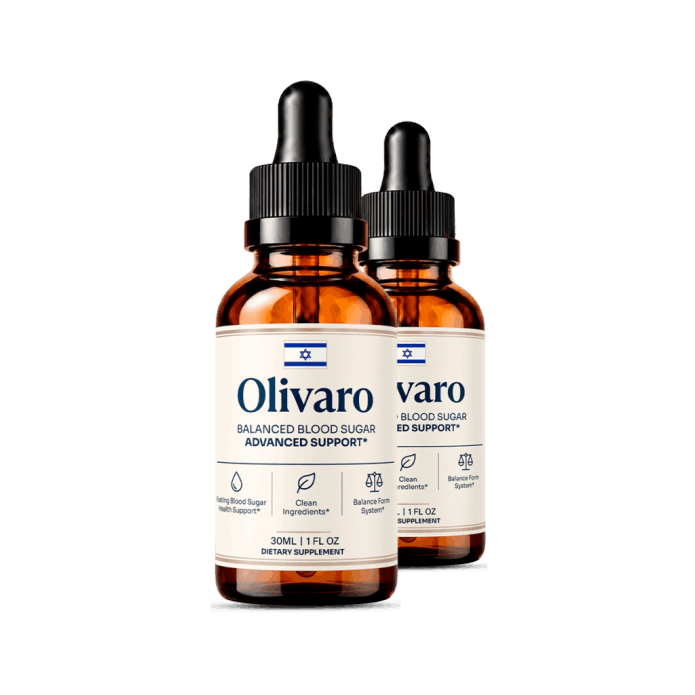
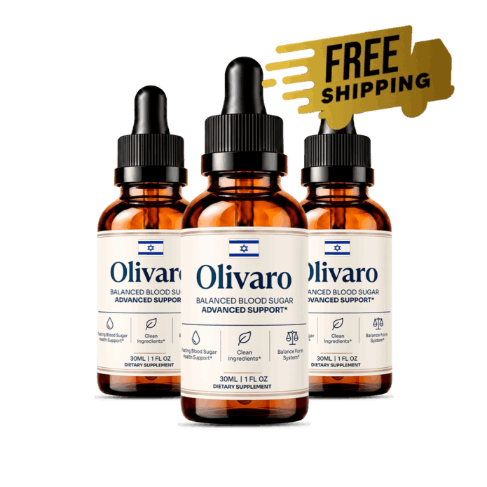
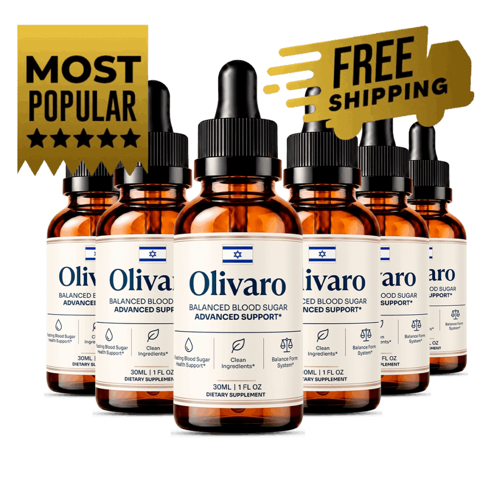
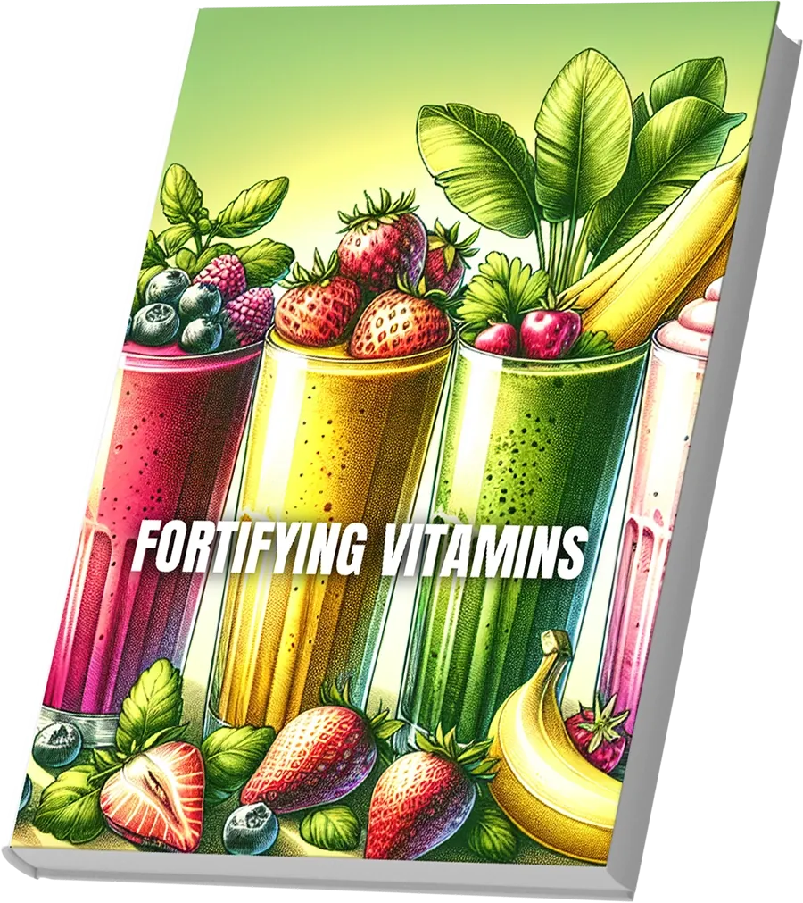
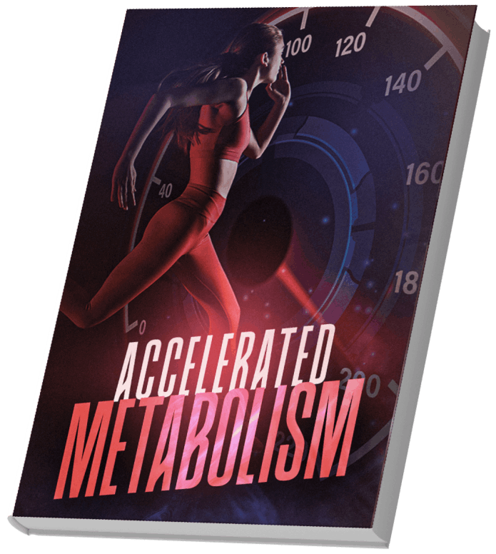
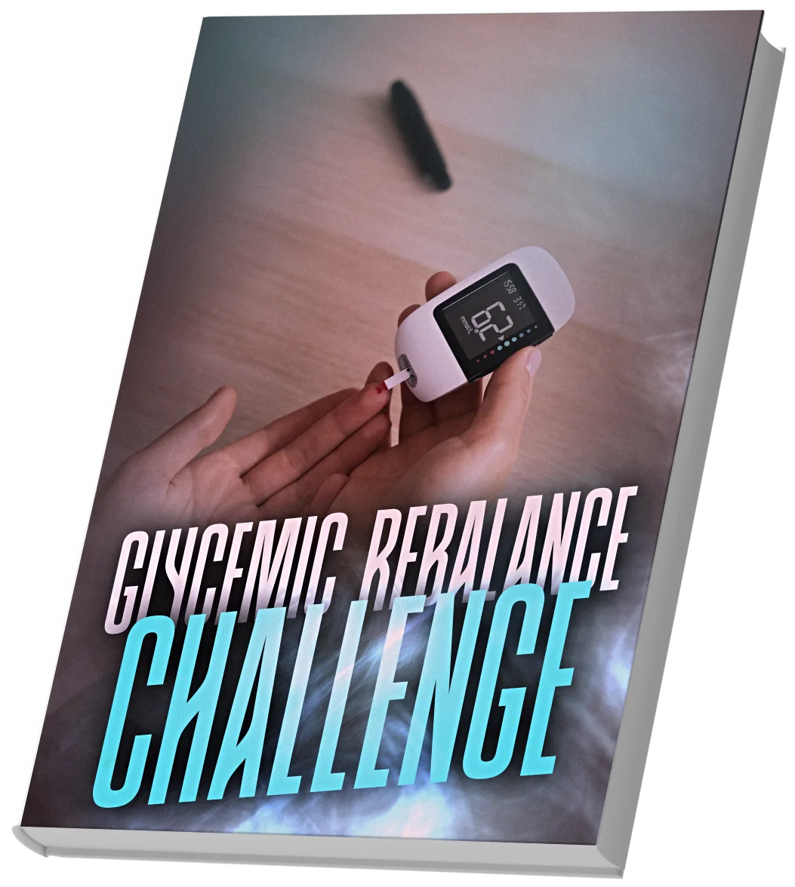
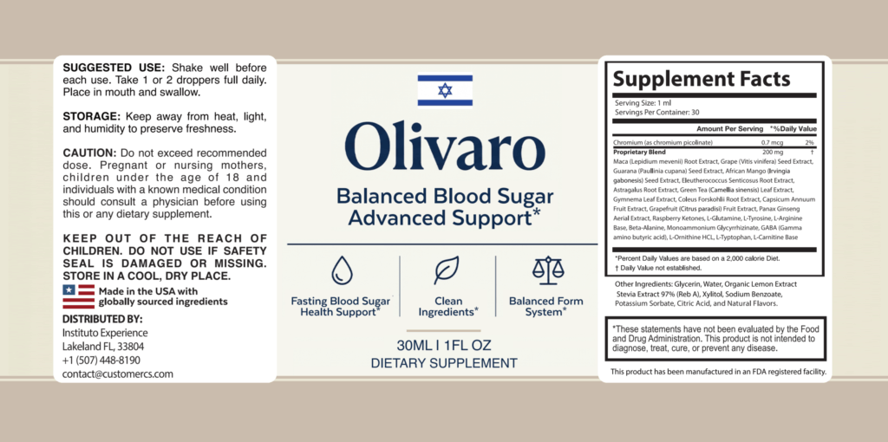
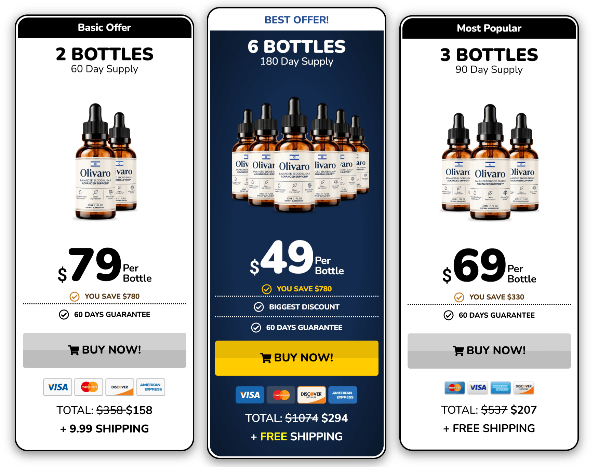

Liquid drops · 30 mL bottle · Adults 18+ · 1 or 2 droppers a day
Olivaro: A Liquid Dropper Supplement That Supports Healthy Blood Sugar Levels And Normal Metabolic Function
Olivaro is a dropper supplement for adults who want a simple daily routine to sit beside balanced meals, movement and regular check-ups. You shake the bottle, take one or two droppers and swallow, with no pills. The seller presents it as support for healthy blood sugar levels and a normal metabolism. It is not a treatment or cure for diabetes, it never replaces prescribed medicine or your own glucose checks, and no result is promised. The label tells a bigger story than the seller's page, with a long blend of botanicals and amino acids that includes caffeine sources, so this site reads the label line by line, flags who must ask a pharmacist first, compares the three pack prices and explains the 60-day guarantee.*
- One or two droppers a day, nothing to swallow whole
- A full Supplement Facts label to read line by line
- Free US shipping on 3 and 6 bottles
- A 60-day money-back guarantee
| Take diabetes medicine or insulin? | Ask first |
| Sensitive to caffeine or on heart medicine? | Read this |
| Confusion, fainting or chest pain? | Seek care |
Secured payment • Encrypted checkout • 60-day guarantee
Related: The label line by line · FAQ · The blog
*These statements have not been evaluated by the Food and Drug Administration. This product is not intended to diagnose, treat, cure or prevent any disease, including diabetes.

An animated teaching sketch, not data. Illustration.
At A Glance
What The Olivaro Seller Says About Quality
These are the seller's statements, reported as stated.
Made In The USA
The label adds "with globally sourced ingredients".
GMP Practice
Good Manufacturing Practice, per the brand.
Plant-Based Blend
Botanicals plus amino acids.
- FDA registered site
Facility Note
Not an FDA approval of the product.
No "FDA approved" seal appears here, because the FDA does not approve dietary supplements. See the FAQ and the label line by line.
Read the label first, then the checkout.
60-day money-back guarantee · Order walkthrough · Pricing
What Is It
What Is Olivaro, As Shown On The Bottle And Page?
Olivaro comes in an amber glass bottle with a dropper and a cream label reading "Balanced Blood Sugar Advanced Support", 30 mL (1 fl oz).*
The label shows 1 mL servings, 30 per bottle, 0.7 mcg of chromium and one 200 mg proprietary blend of 22 botanicals and amino acids. The seller's web page names only six ingredients, so we follow the label.
It is a dietary supplement for adults: not a drug, not FDA approved and not a treatment for diabetes or any other condition.
Related: The ingredient panel · Reading the blend · The label
Read The Ingredients
Seller artwork, as supplied.
Pricing
Olivaro Prices: From $49 A Bottle
Three packs, with free US shipping on the larger two.
Starter
- About 60 days at 1 dropper a day
- Plus $9.99 shipping
- 60-day money-back guarantee
Popular
- About 90 days at 1 dropper a day
- Free US shipping
- 60-day money-back guarantee
Best Value

- About 180 days at 1 dropper a day
- Free US shipping
- Free bonus covers
- 60-day money-back guarantee
Against $79 bottles, three bottles save $10 each and six save $30 each. The seller's page also shows a $179 "regular" price that nobody is shown paying, so we leave it out. Confirm the final total and terms at checkout. Pricing · Order walkthrough · Shipping info
Sixty Days
Olivaro's 60-Day Money-Back Guarantee
The seller advertises a 60-day money-back guarantee: if you are not satisfied within 60 days, email the address provided in the product and ask for a refund of your purchase.
The page says both "of purchase" and "of receiving it", so count from the earlier date and set a reminder around day 45. See the refund policy and the sixty-day guarantee.
Check A Pack With A Guarantee The guarantee in detail →Bonuses
Olivaro Bonus Covers: Free With 6 Bottles
The seller promises bonuses with the six bottle pack.



The seller's headline says six bonuses but lists five; we show the three that are free of disease-style claims and leave out two covers whose descriptions promise to control insulin resistance and relieve nerve symptoms. See the bonus covers, pricing and steady-blood-sugar habits.
Related: Shipping info · Storage on the label · Refund policy
How It Works
How Olivaro Is Meant To Be Used: 1 Or 2 Droppers A Day
The label says: shake well before each use, take 1 or 2 droppers full daily, place in the mouth and swallow, and do not exceed the recommended dose. The seller suggests mornings, before a meal.*
- Check your medicines with a pharmacist first.
- Read your own label, especially the blend and the cautions.
- Shake, then take one dropper, and see how you feel.
- Keep your usual checks and meals going.
- Decide inside the 60-day window.
Related: How to use Olivaro · Liquid drops versus capsules · The guarantee
One dropper inside an ordinary day. Illustration.
Days of use per pack. Illustration.
Ingredients
Inside Olivaro: Chromium And A 22-Item Blend In Six Groups
What each group is and what to watch for. The panel in detail →
The Label At A Glance
One named amount, one blend with no split.

| Olivaro Supplement Facts, as printed | Detail |
|---|---|
| Serving size | 1 mL |
| Servings per container | 30 (30 mL, 1 fl oz bottle) |
| Chromium (as chromium picolinate) | 0.7 mcg (2% DV) |
| Proprietary blend | 200 mg per serving (Daily Value not established) |
| Blend contains | Maca root extract, grape seed extract, guarana seed extract, African mango seed extract, eleuthero root extract, astragalus root extract, green tea leaf extract, gymnema leaf extract, coleus forskohlii root extract, capsicum annuum fruit extract, grapefruit fruit extract, Panax ginseng aerial extract, raspberry ketones, L-glutamine, L-tyrosine, L-arginine base, beta-alanine, monoammonium glycyrrhizinate, GABA, L-ornithine HCl, L-tryptophan, L-carnitine base |
| Other ingredients | Glycerin, water, organic lemon extract, stevia extract 97% (Reb A), xylitol, sodium benzoate, potassium sorbate, citric acid, natural flavors |
How to read it: the seller web page names only six ingredients, but the label lists 22 items in one 200 mg blend plus chromium. Twenty-two ingredients sharing 200 mg average about 9 mg each if split evenly, and the label does not give the split.
Directions (label): shake well before each use, take 1 or 2 droppers full daily, place in the mouth and swallow. Store away from heat, light and humidity. Do not exceed the recommended dose.
General research strength. Illustration.
A fair summary: chromium has mixed trials at doses far above the label's 0.7 mcg, gymnema has small trials, ginseng and green tea are mixed, African mango is weak, and no trial of this liquid is known.* See the blog on chromium, gymnema, African mango and green tea and the amino acids.
On diabetes, blood-pressure or blood-thinning medicine? Ask first.
Honest information first · Blood sugar medicines · Interactions
Safety
Olivaro Safety: Medicines, Caffeine, Licorice And Interactions
Six reasons to ask first.
Your Medicines Stay
Several items are studied for blood sugar and could add to diabetes medicine, and the blend also includes caffeine, a licorice compound, grapefruit and amino acids. Keep each prescription as your clinician set it. See blood sugar medicines and interactions.
Illustration.
Illustration.
A Drop Is Not Diabetes Care
Blood sugar problems need tests and proper treatment. See when to see a doctor.
| If you | Then |
|---|---|
| Take insulin or diabetes medicine | Ask first. See blood sugar medicines. |
| Are sensitive to caffeine or have a heart rhythm issue | Be careful. See caffeine and guarana. |
| Have high blood pressure or take diuretics | Ask first. See licorice and blood pressure. |
| Take blood thinners, antidepressants or many other medicines | Ask first. See grapefruit and interactions. |
| Are pregnant, nursing, under 18 or have a condition | Do not start without a doctor. See pregnancy, children, conditions. |
| Have confusion, fainting or chest pain | Seek emergency care at once. |
Call A Clinician For
Readings far from your usual range, heavy thirst, repeated shaky or confused spells, or a racing heart after a dose.
Keep It Away From Pets
The base contains xylitol, which is dangerous to dogs. Store the bottle out of reach of children and animals.
Illustration.
Benefits
What Olivaro Is Designed To Support, And Its Limits
Goals, never promises. The support goals →
A trial window
A 60-day money-back guarantee.
Illustrative emphasis, not measured.
Habits Carry The Weight
Balanced plates, activity, sleep and your regular checks matter far more than a supplement. See foods and habits for steady blood sugar and what Olivaro is designed to support.
Choose Your Pack
Comparing Olivaro Packs By Cost Per Day
The lowest per-bottle price, $49, is on the six bottle pack.
Starter
- About 60 days at 1 dropper a day
- Plus $9.99 shipping
- 60-day money-back guarantee
Popular
- About 90 days at 1 dropper a day
- Free US shipping
- 60-day money-back guarantee
Best Value
- About 180 days at 1 dropper a day
- Free US shipping
- Free bonus covers
- 60-day money-back guarantee
Cost per day at 1 or 2 droppers. Illustration.
The Sums
Two bottles are $158 plus $9.99 shipping, three are $207 and six are $294. At one dropper a day that is about $2.63, $2.30 and $1.63 a day, and double that at two droppers. See pricing.

The seller's own price cards. Illustration.
Because a bottle is only 30 servings, the daily dose matters to the real cost. If you are unsure how it sits with your medicines, a smaller pack is the careful start. See the order walkthrough.
Customer Reviews
Olivaro Customer Reviews: Questions And Honest Answers
Individual buyers cannot be verified, so no star ratings, review counts or named testimonials appear here, and the portraits supplied are illustrative images only. The seller's page prints three first-person testimonials about "my diabetes" and "my glucose readings", which are disease claims, so we do not repeat them. Verified reviews will be added when they can be shown in full, critical ones included.
Illustrative image, not a customer.
Can I use it with diabetes medicine?
Only after asking your doctor or pharmacist. Several items in the blend are studied for blood sugar and could add to your medicine. Never stop or change a prescription for a supplement.
Illustrative image, not a customer.
Why does it feel stimulating?
The label lists guarana and green tea extract, both caffeine sources, and gives no caffeine amount. Start with one dropper in the morning and stop if you feel jittery.
Illustrative image, not a customer.
Does it treat diabetes?
No. The seller's own page says it is not a cure for diabetes or a substitute for treatment, even though its testimonials claim otherwise. We do not repeat those testimonials.
Send yours
Used Olivaro? Email contact@olivaro.onrender.com with your order number and an honest account, kind or critical. Verified reviews can appear here.
Common questions
Medicines, caffeine, pets and refunds. See the FAQ.
Solid facts
The label, the prices and the guarantee are spelled out here and in the blog.
Questions
Olivaro Questions, Answered Carefully
What is Olivaro?
A 30 mL liquid dietary supplement with a dropper, marketed to support healthy blood sugar levels and normal metabolic function.
What is inside?
Chromium (as picolinate) at 0.7 mcg and a 200 mg proprietary blend of 22 botanicals and amino acids per 1 mL serving, per the label.
The seller says six ingredients. Which is right?
The label lists 22 items in the blend plus chromium. We use the label.
How do I take it?
Shake well, take 1 or 2 droppers full daily, place in the mouth and swallow.
Does it contain caffeine?
It contains guarana and green tea extract, which carry caffeine, but the amount is not stated.
Does it treat diabetes?
No. It is not a treatment or cure, and it never replaces prescribed medicine.
Is it FDA approved?
No. Supplements are not. The label says only that it was made in an FDA registered facility.
Who should ask a doctor first?
Anyone on diabetes, blood-pressure, blood-thinning or antidepressant medicine, or with a heart condition.
How much does it cost?
$79, $69 or $49 a bottle for 2, 3 or 6 bottles: $158 plus $9.99 shipping, $207 or $294.
Is it a subscription?
The seller says it is a one-time purchase with no autoship.
How does the guarantee work?
A 60-day money-back guarantee: email the address provided in the product within 60 days.
Is it safe around pets?
It contains xylitol, which is dangerous to dogs, so keep it out of their reach.
From The Blog
The Olivaro Journal: Ten Linked Reads
Chromium, gymnema, caffeine, blends, drops and habits.
Chromium Picolinate And Blood Sugar
0.7 mcg in context.
IngredientsGymnema Sylvestre: What Studies Show
Small trials.
IngredientsAfrican Mango And Green Tea
Mixed evidence.
SafetyGuarana And Hidden Caffeine
Why it feels stimulating.
IngredientsAmino Acids In A Liquid Blend
Eight items.
SafetyLicorice Glycyrrhizinate, Explained
Blood pressure.
LabelReading A 200 mg Proprietary Blend
About 9 mg each.
FormatLiquid Drops Versus Capsules
The trade-offs.
HabitsFoods And Habits For Steady Blood Sugar
What matters more.
SafetyTalking To Your Pharmacist
What to bring and ask.
Ready When You Are
Start With Your Pharmacist, Then Choose Olivaro
One or two droppers a day, a full Supplement Facts label and a 60-day money-back guarantee, from $49 a bottle on the six bottle pack. Order once you have compared the label with your own medicines and health, especially if you take diabetes, blood-pressure, blood-thinning or antidepressant medicine. See the order walkthrough and pricing.
- A label with 22 items, not six
- Caffeine sources in the blend
- Ask about your medicines first
- No promise of results
The Label
The Olivaro Label Details, As Printed On The Bottle
Servings, chromium, the blend and the base. Line by line →
| Olivaro Supplement Facts, as printed | Detail |
|---|---|
| Serving size | 1 mL |
| Servings per container | 30 (30 mL, 1 fl oz bottle) |
| Chromium (as chromium picolinate) | 0.7 mcg (2% DV) |
| Proprietary blend | 200 mg per serving (Daily Value not established) |
| Blend contains | Maca root extract, grape seed extract, guarana seed extract, African mango seed extract, eleuthero root extract, astragalus root extract, green tea leaf extract, gymnema leaf extract, coleus forskohlii root extract, capsicum annuum fruit extract, grapefruit fruit extract, Panax ginseng aerial extract, raspberry ketones, L-glutamine, L-tyrosine, L-arginine base, beta-alanine, monoammonium glycyrrhizinate, GABA, L-ornithine HCl, L-tryptophan, L-carnitine base |
| Other ingredients | Glycerin, water, organic lemon extract, stevia extract 97% (Reb A), xylitol, sodium benzoate, potassium sorbate, citric acid, natural flavors |
How to read it: the seller web page names only six ingredients, but the label lists 22 items in one 200 mg blend plus chromium. Twenty-two ingredients sharing 200 mg average about 9 mg each if split evenly, and the label does not give the split.
Directions (label): shake well before each use, take 1 or 2 droppers full daily, place in the mouth and swallow. Store away from heat, light and humidity. Do not exceed the recommended dose.
A dietary supplement cannot be FDA approved. Read the directions and warnings on your own bottle, and see the health disclaimer.
References
Independent Reading For Olivaro Shoppers
None of them tested Olivaro itself. Our blog digs into each part →
These organizations do not endorse, sponsor or have any affiliation with Olivaro or this website. See also the health disclaimer.